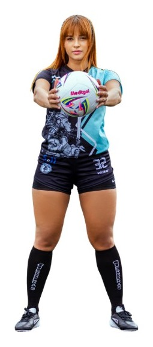
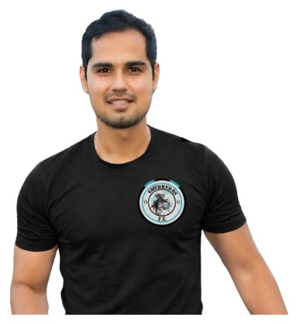

Nosotras
Una familia que juega en serio
Guerreras FC nació en 2015 con cerca de 15 jugadoras. Creció hasta convertirse en el equipo de fútbol femenino amateur más grande de Colombia, con sedes en el norte y en el sur de Cali.

Nosotras
Guerreras FC nació en 2015 con cerca de 15 jugadoras. Creció hasta convertirse en el equipo de fútbol femenino amateur más grande de Colombia, con sedes en el norte y en el sur de Cali.

Empoderar a las mujeres a través de la excelencia en el fútbol. Un futuro donde cada jugadora, sin importar su origen o su nivel, descubre su fuerza, su pasión y su resiliencia dentro y fuera del campo.
Crear una comunidad vibrante e inclusiva. Con entrenamiento, competencia y una red de apoyo, abrimos el juego a mujeres mayores de edad y construimos un legado de camaradería.
Categorías
Tres categorías de base y tres categorías Plus, sin costo adicional. En todas hay torneos.
Base
Principiantes. El cuerpo técnico trabaja las bases para que el fútbol se vuelva gusto, no presión.
Base
Nivel intermedio. Se pulen las bases que ya existen y se afina el juego.
Base
Jugadoras con habilidad y disciplina. Un entorno más competitivo para subir el nivel.
Plus
El grupo élite: las jugadoras más talentosas de la categoría A de cada sede.
Plus
Embajadoras en redes. Talento para el juego y ganas de mostrar lo que es Guerreras.
Plus
Cupo por solicitud y mérito. Hace falta dedicación y un nivel alto de juego.
Historia
Nace Guerreras FC en Cali con unas 15 jugadoras y se inaugura la sede Norte.
Llegamos a 80 alumnas y nos convertimos en el equipo femenino de mayores con más jugadoras del suroccidente colombiano.
El proyecto sale en televisión, radio y prensa. Grabamos nuestra canción y su video.
Se inaugura la sede de Pance y la Copa Guerreras FC, con más de 10 marcas. El torneo amateur femenino de mayores más destacado de la región.
Gira del proyecto El Fútbol es Cosa de Mujeres.
Durante la pandemia hubo clases virtuales y entrevistas en vivo con jugadoras y figuras públicas.
150 jugadoras: el equipo femenino aficionado de mayores con más alumnas de Latinoamérica. Más de 25 mil seguidoras en Instagram, 18 mil en TikTok y 16 mil en Facebook.
Más de 35 marcas se suman, entre ellas Gatorade, La Montaña Agromercados, CC Elite, Mix 101.5, Tony 2 y Vicbay.
Llegamos al título número 18 y lanzamos la segunda edición del calendario impreso 2024.

Ya sea que estés pisando el campo por primera vez o que traigas tu experiencia, vas a ser valorada, apreciada y bienvenida con los brazos abiertos. La familia de Guerreras FC te espera.
Alex Rueda, manager de Guerreras FC